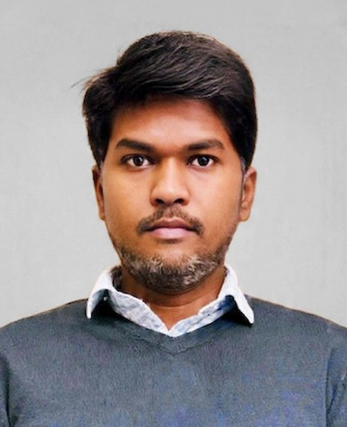

MTComputational Biologist — Single-Cell & Spatial Multi-Omics · Cancer Epigenomics · Statistical ML for Biological Data
7+ years turning large-scale genomic, transcriptomic, and epigenomic datasets into reproducible pipelines and biological insight. Currently a postdoctoral researcher at Karolinska Institutet, working at the intersection of chromatin biology, single-cell genomics, and machine learning.
ScrollI'm a PhD-level computational biologist with a specialization in Computational Systems Biology and 7+ years analysing large-scale multi-omics datasets in cancer genomics and, more recently, single-cell and spatial biology.
Across postdoctoral and doctoral research, I've built end-to-end reproducible pipelines — from raw NGS reads to publication-ready figures — spanning bulk and single-cell RNA-seq, scATAC-seq, GRO-seq, WGS/WES variant calling, and spatial transcriptomics, deployed on Linux HPC infrastructure with Nextflow and Snakemake.
At Karolinska Institutet I work on 3D genome organisation, chromatin remodelling in metastasis, and patient stratification using single-nucleus RNA-seq — applying statistical and machine learning methods to high-dimensional biological data and translating results for clinicians and molecular biologists alike.
Four interconnected areas spanning single-cell genomics, chromatin biology, and applied machine learning.
Full scRNA-seq, snRNA-seq, scATAC-seq, multiome, and 10x Visium spatial workflows — from QC and doublet removal to clustering, annotation, and deconvolution.
GRO-seq, ATAC-seq and 3D genome integration to map enhancers, CTCF-driven regulatory loops, and chromatin remodelling in metastatic progression.
Supervised & unsupervised learning, dimensionality reduction, latent variable models, and gene regulatory network inference on high-dimensional biological data.
Version-controlled, HPC-deployed Nextflow & Snakemake workflows engineered for reproducibility, automation, and cross-team reuse.
From cancer network biology to single-cell multi-omics in a clinical epigenomics group.
Spanning cancer genomics, network biology, and computational method development.
Full list on Google Scholar →
The computational stack behind the research above.
Presenting research internationally and staying active in the computational biology community.
7 international conference presentations in total across the above and additional venues.
Open to bioinformatics scientist and computational biology roles in industry and academia — drug discovery, biomarker research, precision medicine, and single-cell genomics.